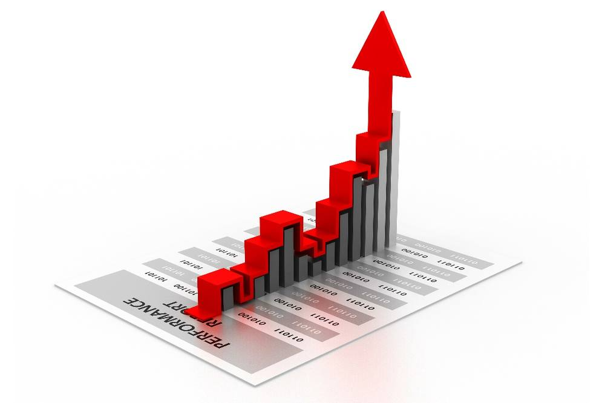
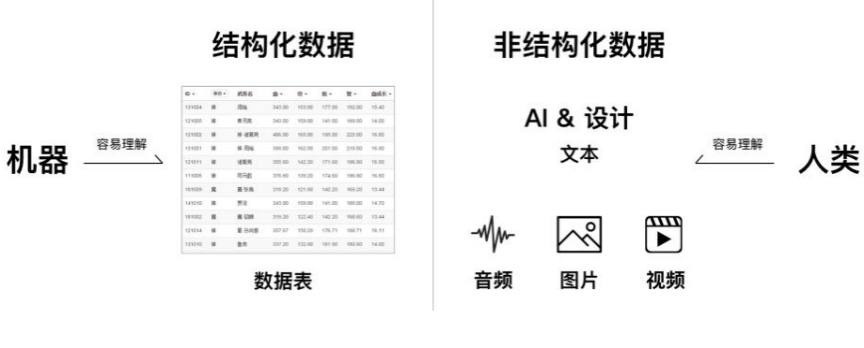
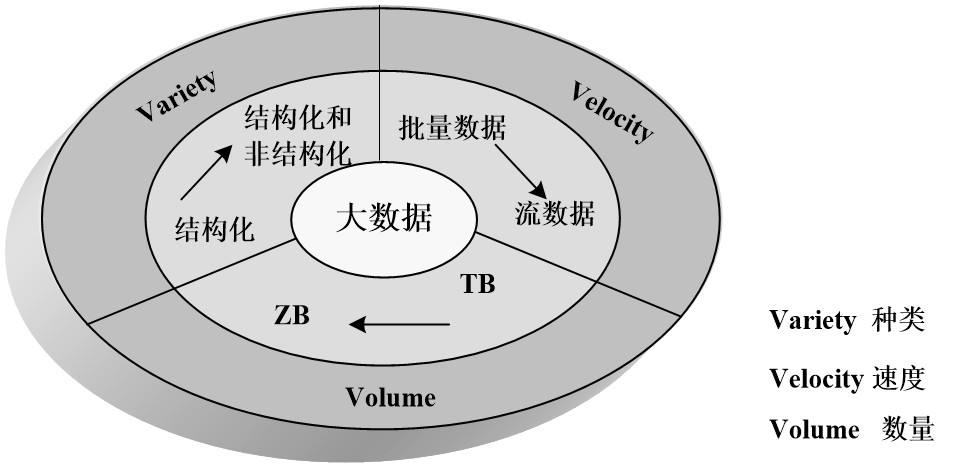
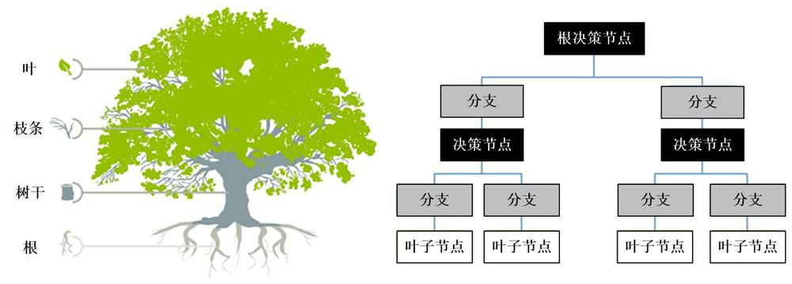
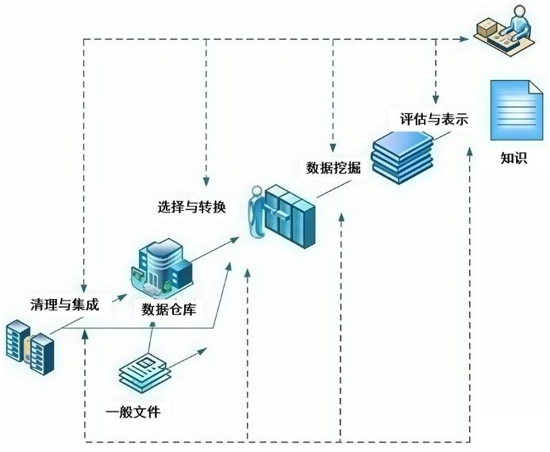
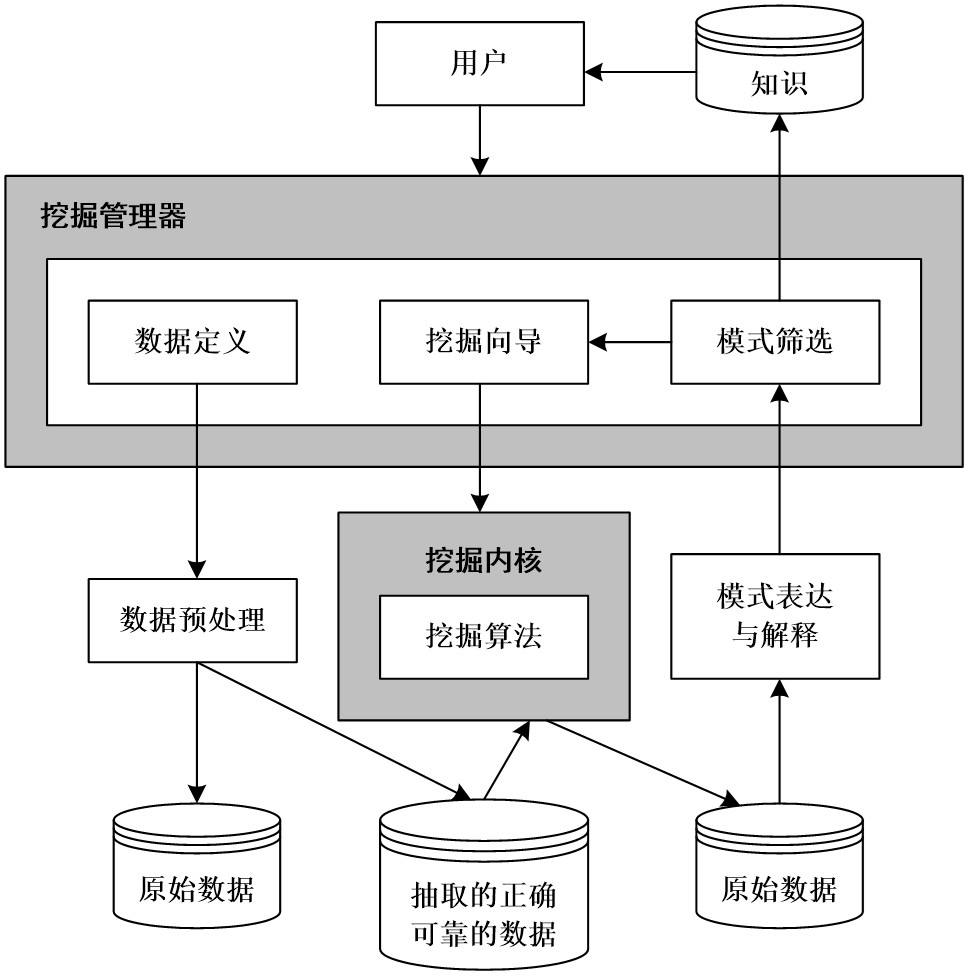
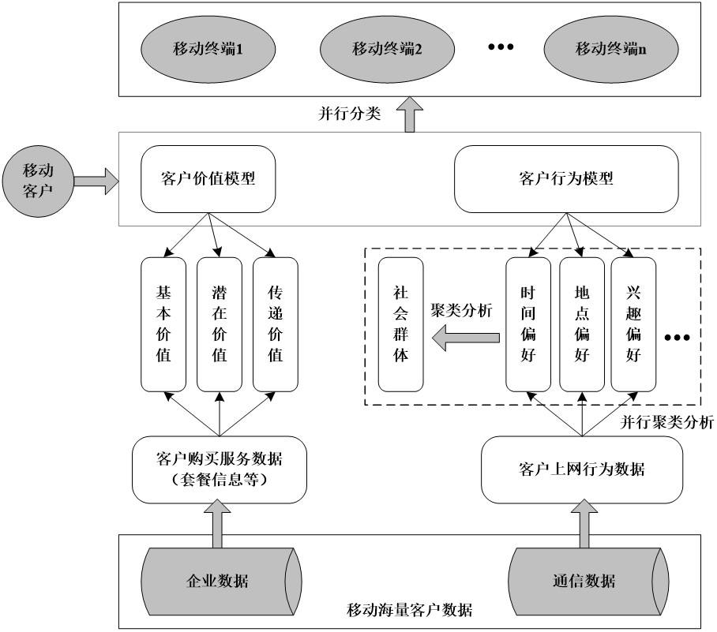

第 1 页 · 数智人才培养

数智人才培养
AI通识精品系列
周苏 教授 QQ：81505050
人工智能通识教程

第 2 页 · 第3章
第3章
周苏 教授 QQ：81505050
数据科学与大数据技术

第 3 页 · 所谓数据素养，是指具备数据意识和数据敏感性，能够有效且恰当地获取、分析、处理、利用和展现数据，它是对统计素养、媒介素养和
所谓数据素养，是指具备数据意识和数据敏感性，能够有效且恰当地获取、分析、处理、利用和展现数据，它是对统计素养、媒介素养和信息素养的一种延伸和扩展。可以从五个方面的维度来思考数据素养，即对数据的敏感性；数据的收集能力；数据的分析、处理能力；利用数据进行决策的能力；对数据的批判性思维。
第3章 数据科学与大数据技术
第 4 页 · 大数据是人工智能的基础。大数据时代，人们对待数据的思维方式主要发生了以下三个变化：
大数据是人工智能的基础。大数据时代，人们对待数据的思维方式主要发生了以下三个变化：
第一，人们处理的数据从样本数据变成全部数据；
第二，由于是全样本数据，人们不得不接受数据的混杂性，而放弃对精确性的追求；
第三，人们通过对大数据的处理，减少对因果关系的渴求，转而关注相关关系。
第3章 数据科学与大数据技术
第 5 页 · 01

01
从机械思维
到数据思维
02
数据科学
的概念
03
大数据思维
与变革
04
从数据
到知识
目录 / CONTENTS
05
数据挖掘
方法
06
大数据与
人工智能
第 6 页 · PART 01
PART 01
从机械思维到数据思维
第 7 页 · 对于整个社会来说，大数据与人工智能所代表的不仅仅是一种技术革命，更是一种由技术引发的思维革命。在社会影响力上，只有始于英
对于整个社会来说，大数据与人工智能所代表的不仅仅是一种技术革命，更是一种由技术引发的思维革命。在社会影响力上，只有始于英国的工业革命、始于德国和美国的二次工业革命、以及“二战”后摩尔定律带来的信息革命能够与其相比。而对人类认识世界的方法上，只有引发工业革命的机械思维能够与之相匹配。
3.1 从机械思维到数据思维
第 8 页 · 说起机械思维，人们可能会将其与死板、僵化等贬义词联系在一起，但是在过去的三个多世纪里面，机械思维算得上是人类总结出的最重
说起机械思维，人们可能会将其与死板、僵化等贬义词联系在一起，但是在过去的三个多世纪里面，机械思维算得上是人类总结出的最重要的思维方式，一如大数据思维、互联网思维在今天的地位，甚至从某种意义上说，近代工业革命得益于机械思维，其影响力也一直延续至今。
3.1.1 人类现代文明的基础
第 9 页 · 对机械思维作出最大贡献的是科学家牛顿，他用几个简单而优美的公式破解了自然之谜。持机械思维的科学家们认为，世界确定无疑，就
对机械思维作出最大贡献的是科学家牛顿，他用几个简单而优美的公式破解了自然之谜。持机械思维的科学家们认为，世界确定无疑，就像一个精密的钟表，依据几个简单公式可以推算事物未来发展变化的趋势。据说时至今日，仍然可以利用牛顿的理论，精确地预测出一千
年后日食和月食的时间。
图3-1 牛顿的《自然哲学之数学原理》
3.1.1 人类现代文明的基础
第 10 页 · 机械思维是欧洲之所以能够在科学上领先于世界的重要原因，其核心方法论是笛卡儿建立的“通过正确的证据、正确的推理、得到正确的
机械思维是欧洲之所以能够在科学上领先于世界的重要原因，其核心方法论是笛卡儿建立的“通过正确的证据、正确的推理、得到正确的结论”的科研方法，概括地说，就是“大胆假设，小心求证”。这种思维方式造就了从欧几里得到托勒密再到牛顿等一位位科学巨匠，将人类带入科学时代，让人们相信世界万物的运动遵循着某种确定性的变化规律，而这些规律又是可以被认知的，为人类带来了前所未有的自信。
3.1.1 人类现代文明的基础
第 11 页 · 机械思维以及因其而发明的各种各样的机械，直接导致工业革命，极大地增加社会财富、延长人类寿命，为人类文明带来了前所未有的进
机械思维以及因其而发明的各种各样的机械，直接导致工业革命，极大地增加社会财富、延长人类寿命，为人类文明带来了前所未有的进步，其核心思想是：
（1）世界变化的规律是确定的；
（2）因为有确定性，因此规律可以被认知，而且可以用简单的公式或者语言描述清楚；
（3）这些规律应该是放之四海皆准的，可以应用到各种未知领域来指导实践。
3.1.1 人类现代文明的基础
第 12 页 · 概括来说，机械思维就是确定性（可预测性）和因果关系。牛顿可以把所有天体运动的规律用几个定律讲清楚，并且应用到任何场合都正
概括来说，机械思维就是确定性（可预测性）和因果关系。牛顿可以把所有天体运动的规律用几个定律讲清楚，并且应用到任何场合都正确，这就是确定性。类似地，当我们给物体施加一个外力时，它就获得一个加速度，而加速度的大小取决于外力和物体本身的质量，这是一种因果关系。机械思维的所有逻辑都建立在确定性的基础上，它决定了机械思维的适用性。
3.1.1 人类现代文明的基础
第 13 页 · 但是，人们发现，这个世界是确定的，也充满了不确定性。
但是，人们发现，这个世界是确定的，也充满了不确定性。
对于不确定性最好的例子就是股市预测。如果统计一下各种专家对股市的预测，会发现它们基本上是对错各一半（巴菲特甚至用猴子来比喻这些投资专家）。这一方面是由于影响股市的因素太多，即使是最好的经济学家也很难将这些因素都研究透彻，有太多的不确定因素是他们考虑不到的，因此无法准确预测市场。再加上还有很多因素是目前人们尚未发现的，或者发现了但是被忽略了，这就使得预测的准确率进一步下降。
3.1.2 确定还是不确定的
第 14 页 · 事实上，美国大部分基金的投资回报率并没有市场的平均值高，这也在很大程度上证明了世界的不确定性。
事实上，美国大部分基金的投资回报率并没有市场的平均值高，这也在很大程度上证明了世界的不确定性。
预测活动本身也影响了被测量的结果，当有人按照某个理论买或卖股票时，其实给股市带来了一个相反的推动力，导致股市在微观上的走向和理论预测的方向相反，从而也推动了股市的不可预测性。
3.1.2 确定还是不确定的
第 15 页 · 这就是世界不确定性的两个主要来源。首先，当我们对这个世界的方方面面了解得越细致后，会发现影响世界的变量其实非常多，无法通
这就是世界不确定性的两个主要来源。首先，当我们对这个世界的方方面面了解得越细致后，会发现影响世界的变量其实非常多，无法通过简单方法或者公式算出结果，因此，人们宁愿采用一些针对随机事件的方法来处理，人为地把它归为不确定的一类。另一个因素来自客观世界本身，它是宇宙的一个特性。在宏观层面，行星围绕恒星运动的速度和位置是可以准确计算的，从而可以画出它的运动轨迹。但是在微观世界里，电子在围绕原子核做高速运动时，我们不可能准确测定出它在某一时刻的位置和运动速度，当然也就不能描绘它的运动轨迹了。
3.1.2 确定还是不确定的
第 16 页 · 要解决不确定性问题，这在过去可能很难，因为因素太多，确定它的成本太高且收益并没有想象中的那么大（见图3-2）。得益于由摩
要解决不确定性问题，这在过去可能很难，因为因素太多，确定它的成本太高且收益并没有想象中的那么大（见图3-2）。得益于由摩尔定律带来的信息革命，从数据的产生、存储、传输和处理各个环节的成本都极大地降低，数据量呈现出爆炸性增长，使得收集各个维度的数据成为可能，这就为解决不确定性问题奠定了基础。概括来讲，是用不确定性的眼光看待世界，再用信息消除不确定性，将很多智能问题转化为信息处理问题。具体到操作方法上，就是用寻找事物的强相关性关系代替原来的寻找因果关系来解决问题。
3.1.3 解决不确定性问题的思维
第 17 页 · 图3-2 机器无法很好理解非结构化数据
图3-2 机器无法很好理解非结构化数据
3.1.3 解决不确定性问题的思维

第 18 页 · 大数据思维是从大量数据中找到直接答案（即使不知道原因）的思维方法，这为我们寻找解决问题的方法提供了捷径。但是，大数据思维
大数据思维是从大量数据中找到直接答案（即使不知道原因）的思维方法，这为我们寻找解决问题的方法提供了捷径。但是，大数据思维和机械思维并非对立，它更多的是后者的补充。对于能够找到确定性和因果关系的事物，机械思维依然是最好的方法。但是面对不确定的世界，当无法确定因果关系时，大数据思维将为我们提供新的方法。
3.1.3 解决不确定性问题的思维
第 19 页 · PART 02
PART 02
数据科学的概念
第 20 页 · 数据科学是一门跨学科领域，它结合统计学、信息科学、计算机科学等多个领域的知识和技术，旨在从大量数据中提取有价值的信息，并
数据科学是一门跨学科领域，它结合统计学、信息科学、计算机科学等多个领域的知识和技术，旨在从大量数据中提取有价值的信息，并将其转化为可操作的知识或决策支持。随着大数据时代的到来，数据科学的重要性日益凸显，成为推动科技进步和社会发展的关键力量之一。
3.2 数据科学的概念
第 21 页 · 数据科学的核心要素包括数据收集与管理、数据清洗与预处理、数据分析与建模、数据可视化以及模型评估与优化，旨在从数据中提取有
数据科学的核心要素包括数据收集与管理、数据清洗与预处理、数据分析与建模、数据可视化以及模型评估与优化，旨在从数据中提取有价值的信息并转化为可操作的知识。
（1）数据收集。数据可以从多种渠道获取，包括传感器网络、社交媒体平台、交易记录、日志文件等。采用自动化工具（如Web爬虫）、API接口调用、问卷调查等方式进行数据采集。
3.2.1 核心要素
第 22 页 · （2）数据存储与管理。
（2）数据存储与管理。
• 数据库技术：关系型数据库（如MySQL）、NoSQL数据库（如MongoDB）用于存储结构化和非结构化数据。
• 大数据平台：Hadoop、Spark等框架提供了分布式存储和计算能力，适合处理大规模数据集。
3.2.1 核心要素
第 23 页 · （3）数据清洗与预处理。
（3）数据清洗与预处理。
• 缺失值处理：填补或删除含有缺失值的记录。
• 异常值检测：识别并处理异常数据点，确保数据质量。
• 标准化/归一化：将不同量级的数据转换到相同尺度，便于后续分析。
3.2.1 核心要素
第 24 页 · （4）数据分析。
（4）数据分析。
• 描述性统计：总结数据的基本特征，如均值、中位数、标准差等。
• 探索性数据分析（EDA）：通过可视化手段（如直方图、箱线图）探索数据分布规律及潜在模式。
• 预测建模：使用机器学习算法（如回归分析、分类树、神经网络）构建预测模型。
3.2.1 核心要素
第 25 页 · （5）数据可视化。
（5）数据可视化。
• 图表绘制：利用Matplotlib、Seaborn、Tableau、Excel等工具生成直观的图形展示，帮助理解和传达复杂的数据关系。
• 交互式仪表盘：创建动态报告，允许用户根据需要调整参数，实时查看结果变化。
3.2.1 核心要素
第 26 页 · （6）模型评估与优化。
（6）模型评估与优化。
• 交叉验证：通过划分训练集和测试集来评估模型性能，避免过拟合现象。
• 超参数调优：运用网格搜索、随机搜索等方法寻找最优参数组合，提升模型准确性。
3.2.1 核心要素
第 27 页 · 数据科学的应用场景涵盖商业智能、医疗健康、金融科技、智能制造和智慧城市等领域，通过数据分析和模型预测来支持决策制定、优化
数据科学的应用场景涵盖商业智能、医疗健康、金融科技、智能制造和智慧城市等领域，通过数据分析和模型预测来支持决策制定、优化流程及创新服务。
（1）商业智能。
• 市场趋势分析：帮助企业理解消费者行为，制定精准营销策略。
• 客户细分：基于购买历史、浏览行为等因素对客户群体进行分类，提供个性化服务。
3.2.2 应用场景
第 28 页 · （2）医疗健康。
（2）医疗健康。
• 疾病预测：通过分析患者病历、基因组数据预测疾病风险，辅助早期诊断。
• 药物研发：加速新药发现过程，降低研发成本。
（3）金融科技。
• 信用评分：利用大数据评估个人或企业的信用状况，防范金融风险。
• 欺诈检测：实时监控交易活动，识别可疑行为，保障资金安全。
3.2.2 应用场景
第 29 页 · （4）智能制造。
（4）智能制造。
• 生产优化：分析生产线上的传感器数据，提高效率、降低成本。
• 质量控制：通过图像识别技术自动检测产品缺陷，确保产品质量。
（5）智慧城市。
• 交通管理：整合多源交通数据，优化信号灯设置，缓解拥堵。
• 能源管理：预测用电需求，合理调配资源，促进节能减排。
3.2.2 应用场景
第 30 页 · 进一步地，数据科学的未来发展趋势如下。
进一步地，数据科学的未来发展趋势如下。
（1）自动化与智能化。自动化机器学习技术将进一步简化模型开发流程，使得非专业人士也能轻松上手。
（2）隐私保护与伦理考量。随着数据泄露事件频发，如何在充分利用数据价值的同时保护用户隐私成为亟待解决的问题。需要加强数据伦理教育，制定严格的行业规范，防止滥用数据造成不良后果。
3.2.2 应用场景
第 31 页 · （3）边缘计算与物联网。边缘设备的普及促使数据处理更加靠近源头，减少延迟，提高响应速度。物联网产生的海量数据为数据科学提
（3）边缘计算与物联网。边缘设备的普及促使数据处理更加靠近源头，减少延迟，提高响应速度。物联网产生的海量数据为数据科学提供了丰富的素材，同时也提出了更高的处理要求。
3.2.2 应用场景
第 32 页 · 数据科学家是具备统计学、计算机科学和领域知识的专家，他们运用数据分析、机器学习等技术从大量数据中提取有价值的信息，以支持
数据科学家是具备统计学、计算机科学和领域知识的专家，他们运用数据分析、机器学习等技术从大量数据中提取有价值的信息，以支持决策制定和创新解决方案。
（1）角色定位。
• 数据工程师：负责搭建数据基础设施，确保数据的高效存储与传输。
• 数据分析师：专注于数据解读，为业务决策提供依据。
• 机器学习工程师：开发和部署预测模型，解决实际问题。
3.2.3 数据科学家角色
第 33 页 · （2）技能要求。
（2）技能要求。
• 编程能力：熟练掌握至少一种编程语言（如Python、R），具备良好的代码编写习惯。
• 数学与统计基础：理解概率论、线性代数、微积分等基础知识，掌握常见的统计方法。
• 机器学习知识：熟悉监督学习、无监督学习、强化学习等基本概念及其应用场景。
3.2.3 数据科学家角色
第 34 页 · • 沟通技巧：能够清晰地向非技术人员解释复杂的技术细节，撰写详尽的项目报告。
• 沟通技巧：能够清晰地向非技术人员解释复杂的技术细节，撰写详尽的项目报告。
总之，数据科学充满活力且快速发展，它不仅改变了我们看待世界的方式，也为各行各业带来了前所未有的机遇。掌握数据科学不仅能增强个人竞争力，还能为企业和社会创造巨大价值。
3.2.3 数据科学家角色
第 35 页 · PART 03
PART 03
大数据思维与变革
第 36 页 · 生产资料是人类文明的核心。农业时代生产资料是土地，工业时代生产资料是机器，数字时代生产资料是数据。劳动方式是人类文明的重
生产资料是人类文明的核心。农业时代生产资料是土地，工业时代生产资料是机器，数字时代生产资料是数据。劳动方式是人类文明的重要表征。渔猎农耕时代形成的是以手工劳动为主要方式的“手工文明”，工业时代发展为以机器劳动为主要方式的“机器文明”，智能时代则基于数字劳动而不断推动和丰富着“数字文明”。
3.3 大数据思维与变革
第 37 页 · “数字文明”折射出以大数据、人工智能等为代表的数字技术对世界和人类的影响，在广度和深度上有了质的飞跃，到了塑造一种人类文
“数字文明”折射出以大数据、人工智能等为代表的数字技术对世界和人类的影响，在广度和深度上有了质的飞跃，到了塑造一种人类文明新形态的高度。数字技术正以新理念、新业态、新模式全面融入人类经济、政治、文化、社会、生态文明建设各领域和全过程，给人类生产生活带来广泛而深刻的影响。以数字技术为基座的互联网，促进交流、提高效率，也在重塑制度、催生变革，更影响社会思潮和人类文明进程。这是不可逆转的时代趋势。
3.3 大数据思维与变革
第 38 页 · 半个世纪以来，随着计算机技术全面和深度地融入社会生活，信息爆炸已经积累到了一个引发变革的程度。它不仅使世界充斥着比以往更
半个世纪以来，随着计算机技术全面和深度地融入社会生活，信息爆炸已经积累到了一个引发变革的程度。它不仅使世界充斥着比以往更多的信息，而且其增长速度也在加快。信息总量的变化还导致了信息形态的变化——量变引起了质变。
3.3.1 大数据的定义
第 39 页 · 如今，人类存储信息量的增长速度比世界经济的增长速度快4倍，而计算机数据处理能力的增长速度则比世界经济的增长速度快9倍，每
如今，人类存储信息量的增长速度比世界经济的增长速度快4倍，而计算机数据处理能力的增长速度则比世界经济的增长速度快9倍，每个人都受到了这种极速发展的冲击。大数据的科学价值和社会价值正是体现在这里。一方面，对大数据的掌握程度可以转化为经济价值的来源。另一方面，大数据已经撼动了世界的方方面面，从商业科技到医疗、政府、教育、经济、人文以及社会的其他各个领域。
3.3.1 大数据的定义
第 40 页 · 以前，一旦达成了收集的目的，数据就会被认为没有用处了。比方说，在飞机降落之后，票价数据就没有用了——如果没有大数据的理念
以前，一旦达成了收集的目的，数据就会被认为没有用处了。比方说，在飞机降落之后，票价数据就没有用了——如果没有大数据的理念，人们可能会丢失掉很多有价值的数据。数据已经成为一种商业资本，一项重要的经济投入，可以创造新的经济利益。事实上，一旦思维转变过来，数据就能被巧妙地用来激发新产品和新服务。今天，大数据是人们获得新的认知、创造新的价值的源泉，还是改变市场、组织机构以及政府与公民关系的方法。大数据时代对我们的生活和与世界交流的方式都提出了挑战。
3.3.1 大数据的定义
第 41 页 · 所谓大数据，狭义上可以定义为：用现有的一般技术难以管理的大量数据的集合。这实际上是指用目前在企业数据库占据主流地位的关系
所谓大数据，狭义上可以定义为：用现有的一般技术难以管理的大量数据的集合。这实际上是指用目前在企业数据库占据主流地位的关系型数据库无法进行管理的、具有复杂结构的数据。或者也可以说，是指由于数据量的增大，导致对数据的查询响应时间超出了允许的范围。
3.3.1 大数据的定义
第 42 页 · 全球知名的管理咨询公司麦肯锡说：“大数据指的是所涉及的数据集规模已经超过了传统数据库软件获取、存储、营理和分析的能力。这
全球知名的管理咨询公司麦肯锡说：“大数据指的是所涉及的数据集规模已经超过了传统数据库软件获取、存储、营理和分析的能力。这是一个被故意设计成主观性的定义，并且是一个关于多大的数据集才能被认为是大数据的可变定义，即并不定义大于一个特定数字的TB才叫大数据。因为随着技术的不断发展，符合大数据标准的数据集容量也会增长；并且定义随不同的行业也有变化，这依赖于在一个特定行业通常使用何种软件和数据集有多大。因此，大数据在今天不同行业中的范围可以从几十TB到几PB。”
3.3.1 大数据的定义
第 43 页 · IBM说：“可以用3个特征相结合来定义大数据：数量（或称容量）、种类（或称多样性）和速度，或者就是简单的3V，即庞大容量

IBM说：“可以用3个特征相结合来定义大数据：数量（或称容量）、种类（或称多样性）和速度，或者就是简单的3V，即庞大容量、极快速度和种类丰富的数据。”
图3-3 按数量、种类和速度来定义大数据
3.3.1 大数据的定义
第 44 页 · （1）Volume（数量）。存储的数据量在急剧增长中，人们存储的数据包括环境数据、财务数据、医疗数据、监控数据等等，数据
（1）Volume（数量）。存储的数据量在急剧增长中，人们存储的数据包括环境数据、财务数据、医疗数据、监控数据等等，数据量不可避免地会转向ZB级别。另一方面，随着可供使用的数据量不断增长，可处理、理解和分析的数据的比例却在不断下降。
3.3.1 大数据的定义
第 45 页 · （2）Variety（种类、多样性）。随着传感器、智能设备以及社交协作技术的激增，数据也变得更加复杂，因为它不仅包含传统
（2）Variety（种类、多样性）。随着传感器、智能设备以及社交协作技术的激增，数据也变得更加复杂，因为它不仅包含传统的关系型（结构化）数据，还包含来自网页、互联网日志文件（流数据）、搜索索引、社交媒体、电子邮件、文档、主动和被动系统的传感器数据等原始、半结构化和非结构化数据。和过去不同的是，除了存储数据，还需要分析并从中获得有用的信息。
3.3.1 大数据的定义
第 46 页 · （3）Velocity（速度）。数据产生和更新的频率也是衡量大数据的一个重要特征。这里，速度的概念不仅是与数据存储相关的
（3）Velocity（速度）。数据产生和更新的频率也是衡量大数据的一个重要特征。这里，速度的概念不仅是与数据存储相关的增长速率，还包括数据流动的速度。有效地处理大数据，需要在数据变化的过程中动态地对它的数量和种类执行分析。
3.3.1 大数据的定义
第 47 页 · 在3V的基础上，IBM又归纳总结了第四个V——Veracity（真实和准确）。“只有真实而准确的数据才能让对数据的管控和
在3V的基础上，IBM又归纳总结了第四个V——Veracity（真实和准确）。“只有真实而准确的数据才能让对数据的管控和治理真正有意义。”
可见，大数据是个动态的定义，不同行业根据其应用的不同有着不同的理解，其衡量标准也在随着技术的进步而改变。
3.3.1 大数据的定义
第 48 页 · 很长时间以来，因为记录、储存和分析数据的工具不够好，为了让分析变得简单，当面临大量数据时，通常都依赖于采样分析。但是采样
很长时间以来，因为记录、储存和分析数据的工具不够好，为了让分析变得简单，当面临大量数据时，通常都依赖于采样分析。但是采样分析是信息缺乏时代和信息流通受限制的模拟数据时代的产物。如今信息技术的条件已经有了非常大的提高，虽然人类可以处理的数据依然是有限的，但是可以处理的数据量已经大大地增加，而且未来会越来越多。
大数据时代的第一个转变，是要分析与某事物相关的所有数据，而不是依靠分析少量的数据样本。
3.3.2 思维转变之一：样本=总体
第 49 页 · 采样的目的是用最少的数据得到更多的信息，而当我们可以处理海量数据的时候，采样就没有什么意义了。如今，计算和制表已经不再困
采样的目的是用最少的数据得到更多的信息，而当我们可以处理海量数据的时候，采样就没有什么意义了。如今，计算和制表已经不再困难，感应器、手机导航、网站点击和微信等被动地收集了大量数据，而计算机可以轻易地对这些数据进行处理。但是，数据处理技术己经发生了翻天覆地的改变，而我们的方法和思维却没有跟上这种改变。
在很多领域，从收集部分数据到收集尽可能多的数据的转变已经发生。如果可能的话，我们会收集所有的数据，即“样本=总体”，这是指我们能对数据进行深度探讨。
3.3.2 思维转变之一：样本=总体
第 50 页 · 谷歌流感趋势预测不是依赖于随机样本，而是分析了全美国几十亿条互联网检索记录。分析整个数据库，而不是对一个小样本进行分析，
谷歌流感趋势预测不是依赖于随机样本，而是分析了全美国几十亿条互联网检索记录。分析整个数据库，而不是对一个小样本进行分析，能够提高微观层面分析的准确性，甚至能够推测出某个特定城市的流感状况。
通过使用所有的数据，我们可以发现如若不然则将会在大量数据中淹没掉的情况。例如，信用卡诈骗是通过观察异常情况来识别的，只有掌握了所有的数据才能做到这一点。在这种情况下，异常值是最有用的信息，你可以把它与正常交易情况进行对比。而且，因为交易是即时的，所以你的数据分析也应该是即时的。
3.3.2 思维转变之一：样本=总体
第 51 页 · 因为大数据是建立在掌握所有数据，至少是尽可能多的数据的基础上的，所以我们就可以正确地考察细节并进行新的分析。在任何细微的
因为大数据是建立在掌握所有数据，至少是尽可能多的数据的基础上的，所以我们就可以正确地考察细节并进行新的分析。在任何细微的层面，我们都可以用大数据去论证新的假设。当然，有些时候，我们还是可以使用样本分析法，毕竟我们仍然活在一个资源有限的时代。但是更多时候，利用手中掌握的所有数据成为了最好也是可行的选择。于是，慢慢地，我们会完全抛弃样本分析。
3.3.2 思维转变之一：样本=总体
第 52 页 · 当我们测量事物的能力受限时，关注最重要的事情和获取最精确的结果是可取的。直到今天，我们的数字技术依然建立在精准的基础上。
当我们测量事物的能力受限时，关注最重要的事情和获取最精确的结果是可取的。直到今天，我们的数字技术依然建立在精准的基础上。我们假设只要电子数据表格把数据排序，数据库引擎就可以找出和我们检索的内容完全一致的检索记录。这种思维方式适用于掌握“小数据量”的情况，因为需要分析的数据很少，所以我们必须尽可能精准地量化我们的记录。在某些方面，我们已经意识到了差别。例如，一个小商店在晚上打烊的时候要把收银台里的每分钱都数清楚，但是我们不会、也不可能用“分”这个单位去精确度量国民生产总值。随着规模的扩大，对精确度的痴迷将减弱。
3.3.3 思维转变之二：接收数据的混杂性
第 53 页 · 针对小数据量和特定事情，追求精确性依然是可行的，比如一个人的银行账户上是否有足够的钱开具支票。但是，在大数据时代，很多时
针对小数据量和特定事情，追求精确性依然是可行的，比如一个人的银行账户上是否有足够的钱开具支票。但是，在大数据时代，很多时候，追求精确度已经变得不可行，甚至不受欢迎了。大数据纷繁多样，优劣掺杂，分布在全球多个服务器上。拥有了大数据，我们不再需要对一个现象刨根究底，只要掌握大体的发展方向即可。当然，我们也不是完全放弃了精确度，只是不再沉迷于此。适当忽略微观层面上的精确度会让我们在宏观层面拥有更好的洞察力。
3.3.3 思维转变之二：接收数据的混杂性
第 54 页 · 大数据时代的第二个转变，是我们乐于接受数据的纷繁复杂，而不再一味追求其精确性。在越来越多的情况下，使用所有可获取的数据变
大数据时代的第二个转变，是我们乐于接受数据的纷繁复杂，而不再一味追求其精确性。在越来越多的情况下，使用所有可获取的数据变得更为可能，但为此也要付出一定的代价。数据量的大幅增加会造成结果的不准确，与此同时，一些错误的数据也会混进数据库。然而，重点是我们能够努力避免这些问题。
3.3.3 思维转变之二：接收数据的混杂性
第 55 页 · 大数据在多大程度上优于算法，这个问题在自然语言处理上表现得很明显。2000年，微软研究中心的米歇尔·班科和埃里克·布里尔
大数据在多大程度上优于算法，这个问题在自然语言处理上表现得很明显。2000年，微软研究中心的米歇尔·班科和埃里克·布里尔一直在寻求改进Word程序中语法检查的方法。但是他们不能确定是努力改进现有的算法、研发新的方法，还是添加更加细腻精致的特点更有效。所以，在实施这些措施之前，他们决定往现有的算法中添加更多的数据，看看会有什么不同的变化。很多对计算机学习算法的研究都建立在百万字左右的语料库基础上。最后，他们决定往4种常见的算法中逐新添加数据，先是一千万字，再到一亿字，最后到十亿。
3.3.3 思维转变之二：接收数据的混杂性
第 56 页 · 结果有点令人吃惊。他们发现，随着数据的增多，4种算法的表现都大幅提高了。当数据只有500万的时候，有一种简单的算法表现得
结果有点令人吃惊。他们发现，随着数据的增多，4种算法的表现都大幅提高了。当数据只有500万的时候，有一种简单的算法表现得很差，但当数据达10亿的时候，它变成了表现最好的，准确率从原来的75％提高到了95％以上。与之相反地，在少量数据情况下运行得最好的算法，当加入更多的数据时，也会像其他的算法一样有所提高，但是却变成了在大量数据条件下运行得最不好的。它的准确率会从86%提高到94％。
后来，班科和布里尔在他们发表的研究论文中写到，“如此一来，我们得重新衡量一下更多的人力物力是应该消耗在算法发展上还是在语料库发展上。”
3.3.3 思维转变之二：接收数据的混杂性
第 57 页 · 这是因前两个转变而促成的。寻找因果关系是人类长久以来的习惯，即使确定因果关系很困难而且用途不大，人类还是习惯性地寻找缘由
这是因前两个转变而促成的。寻找因果关系是人类长久以来的习惯，即使确定因果关系很困难而且用途不大，人类还是习惯性地寻找缘由。相反，在大数据时代，我们无须再紧盯事物之间的因果关系，而应该寻找事物之间的相关关系，这会给我们提供非常新颖且有价值的观点。相关关系也许不能准确地告知我们某件事情为何会发生，但是它会提醒我们这件事情正在发生。在许多情况下，这种提醒的帮助已经足够大了。在很多时候，寻找数据间的关联并利用这种关联就足够了。这些思想上的重大转变导致了第三个变革。
3.3.4 思维转变之三：数据的相关关系
第 58 页 · 大数据时代的第三个转变是人们尝试着不再探求难以捉摸的因果关系，转而关注事物的相关关系。例如，如果数百万条电子医疗记录都显
大数据时代的第三个转变是人们尝试着不再探求难以捉摸的因果关系，转而关注事物的相关关系。例如，如果数百万条电子医疗记录都显示橙汁和阿司匹林的特定组合可以治疗癌症，那么找出具体的药理机制就没有这种治疗方法本身来得重要。同样，只要我们知道什么时候是买机票的最佳时机，就算不知道机票价格疯狂变动的原因也无所谓了。
3.3.4 思维转变之三：数据的相关关系
第 59 页 · 大数据告诉我们“是什么”而不是“为什么”。在大数据时代，我们不必知道现象背后的原因，只要让数据自己发声。我们不再需要在还
大数据告诉我们“是什么”而不是“为什么”。在大数据时代，我们不必知道现象背后的原因，只要让数据自己发声。我们不再需要在还没有收集数据之前，就把分析建立在早已设立的少量假设的基础之上。让数据发声，我们会注意到很多以前从来没有意识到的联系的存在。
3.3.4 思维转变之三：数据的相关关系
第 60 页 · 与常识相反，经常凭借直觉而来的因果关系并没有帮助我们加深对这个世界的理解。很多时候，这种认知捷径只是给了我们一种自己已经
与常识相反，经常凭借直觉而来的因果关系并没有帮助我们加深对这个世界的理解。很多时候，这种认知捷径只是给了我们一种自己已经理解的错觉，但实际上，我们因此完全陷入了理解误区之中。就像采样是我们无法处理全部数据时的捷径一样，这种找因果关系的方法也是我们大脑用来避免辛苦思考的捷径。
不像因果关系，证明相关关系的实验耗资少，费时也少。与之相比，分析相关关系，我们既有数学方法，也有统计学方法，同时，数字工具也能帮我们准确地找出相关关系。
3.3.4 思维转变之三：数据的相关关系
第 61 页 · 相关关系分析本身意义重大，同时它也为研究因果关系奠定了基础。通过找出可能相关的事物，我们可以在此基础上进行进一步的因果关
相关关系分析本身意义重大，同时它也为研究因果关系奠定了基础。通过找出可能相关的事物，我们可以在此基础上进行进一步的因果关系分析．如果存在因果关系的话，我们再进一步找出原因。这种便捷的机制通过实验降低了因果分析的成本。我们也可以从相互联系中找到一些重要的变量，这些变量可以用到验证因果关系的实验中去。
可是，我们必须非常认真。相关关系很有用，不仅仅是因为它能为我们提供新的视角，而且提供的视角都很清晰。而我们一旦把因果关系考虑进来，这些视角就有可能被蒙蔽掉。
3.3.4 思维转变之三：数据的相关关系
第 62 页 · 例如，Kaggle是一家为所有人提供数据挖掘竞赛平台的公司，举办了关于二手车的质量竞赛。经销商将二手车数据提供参加比赛二
例如，Kaggle是一家为所有人提供数据挖掘竞赛平台的公司，举办了关于二手车的质量竞赛。经销商将二手车数据提供参加比赛二手车数据，统计学家们用这些数据建立一个算法系统来预测经销商拍卖的哪些车有可能出现质量问题。相关关系分析表明，橙色的车有质量问题的可能性只有其他车的一半。
读到这里的时候，我们不禁也会思考其中的原因。难道是因为橙色车的车主更爱车，所以车被保护得更好吗？或是这种颜色的车子在制造方面更精良些吗？还是因为橙色的车更显眼、出车祸的概率更小，所以转手的时候．各方面的性能保持得更好？
3.3.4 思维转变之三：数据的相关关系
第 63 页 · 马上，我们就陷入了各种各样谜一样的假设中。若要找出相关关系，我们可以用数学方法，但如果是因果关系的话，这却是行不通的。所
马上，我们就陷入了各种各样谜一样的假设中。若要找出相关关系，我们可以用数学方法，但如果是因果关系的话，这却是行不通的。所以，我们没必要一定要找出相关关系背后的原因，当我们知道了“是什么”的时候，“为什么”其实没那么重要了，否则就会催生一些滑稽的想法。比方说上面提到的例子里，我们是不是应该建议车主把车漆成橙色呢？毕竟，这样就说明车子的质量更过硬啊！
3.3.4 思维转变之三：数据的相关关系
第 64 页 · 考虑到这些，如果把以确凿数据为基础的相关关系和通过快速思维构想出的因果关系相比的话，前者就更具有说服力。但在越来越多的情
考虑到这些，如果把以确凿数据为基础的相关关系和通过快速思维构想出的因果关系相比的话，前者就更具有说服力。但在越来越多的情况下，快速清晰的相关关系分析甚至比慢速的因果分析更有用和更有效。慢速的因果分析集中体现为通过严格控制的实验来验证的因果关系，而这必然是非常耗时耗力的。
3.3.4 思维转变之三：数据的相关关系
第 65 页 · 近年来，科学家一直在试图减少这些实验的花费，比如说，通过巧妙地结合相似的调查，做成“类似实验”。这样一来，因果关系的调查
近年来，科学家一直在试图减少这些实验的花费，比如说，通过巧妙地结合相似的调查，做成“类似实验”。这样一来，因果关系的调查成本就降低，但还是很难与相关关系体现的优越性相抗衡。还有，正如我们之前提到的，在专家进行因果关系的调查时，相关关系分析本来就会起到帮助的作用。在大多数情况下，一旦我们完成了对大数据的相关关系分析，而又不再满足于仅仅知道“是什么”时，我们就会继续向更深层次研究因果关系，找出背后的“为什么”。
3.3.4 思维转变之三：数据的相关关系
第 66 页 · 因果关系还是有用的，但是它将不再被看成是意义来源的基础。在大数据时代，即使很多情况下，我们依然指望用因果关系来说明我们所
因果关系还是有用的，但是它将不再被看成是意义来源的基础。在大数据时代，即使很多情况下，我们依然指望用因果关系来说明我们所发现的相互联系，但是，我们知道因果关系只是一种特殊的相关关系。相反，大数据推动了相关关系分析。相关关系分析通常情况下能取代因果关系起作用，即使不可取代的情况下，它也能指导因果关系起作用。
3.3.4 思维转变之三：数据的相关关系
第 67 页 · PART 04
PART 04
从数据到知识
第 68 页 · 如今，现实社会有大量的数据唾手可得。就不同领域来说，大部分数据都十分有用，但前提是人们有能力从中提取出感兴趣的内容。例如
如今，现实社会有大量的数据唾手可得。就不同领域来说，大部分数据都十分有用，但前提是人们有能力从中提取出感兴趣的内容。例如，一家大型连锁店有关于其数百万顾客购物习惯的数据，社会媒体和其他互联网服务提供商有成千上万用户的数据，但这只是记录谁在什么时候买了什么的原始数字，似乎毫无用处。
3.4 从数据到知识
第 69 页 · 数据不等于信息，而信息也不等于知识。了解数据（将其转化为信息）并利用数据（再将其转化为知识）是一项巨大的工程。如果某人需
数据不等于信息，而信息也不等于知识。了解数据（将其转化为信息）并利用数据（再将其转化为知识）是一项巨大的工程。如果某人需要处理100万人的数据，每个人仅用时10秒，这项任务还是需要一年才能完成。由于每个人可能一周要买好几十件产品，等数据分析结果出来都已经过了一年了。当然，这种人类需要花费大量时间才能完成的任务可以交由计算机来完成，但往往我们并不确定到底想要计算机寻找什么样的答案。
3.4 从数据到知识
第 70 页 · 数据存储在称为数据库的计算机系统中，数据库程序具有内置功能，可以分析数据，并按用户要求呈现出不同形式。假如我们拥有充足的
数据存储在称为数据库的计算机系统中，数据库程序具有内置功能，可以分析数据，并按用户要求呈现出不同形式。假如我们拥有充足的时间和敏锐的直觉，就可以从数据中分析出有用的规律来调整经营模式，从而获取更大的利润。然而，时间和直觉是有所收获的重要前提，如果能自动生成这些数据间的联系无疑对商家来说更有吸引力。
3.4 从数据到知识
第 71 页 · 所有人工智能方法都可以用于数据挖掘，特别是神经网络及模糊逻辑，但有一些格外特殊，其中一种技术就是决策树（见图3-4），它
所有人工智能方法都可以用于数据挖掘，特别是神经网络及模糊逻辑，但有一些格外特殊，其中一种技术就是决策树（见图3-4），它是数据挖掘时常用的技术，可用于市场定位，找出最相关的数据来预测结果。如果我们想要得到购买意大利通心粉的人口统计数据，首先，将数据库切分为购买意大利通心粉的顾客和不买的顾客，再检查每个独立个体的数据，从中找到最不平均的切分。我们可能会发现最具差异的数据就是购买者的性别，与女性相比，男性更倾向于购买意大利通心粉，然后，可以将数据库按性别分割，再分别对每一半数据重复同样的操作。
3.4.1 决策树分析
第 72 页 · 图3-4 用于预测结果的决策树示例
图3-4 用于预测结果的决策树示例
3.4.1 决策树分析

第 73 页 · 计算机可能会发现男性中差异最大的因素是年龄，而女性中差异最大的是平均收入。继续这一过程将数据分析变得更加详细，直到每一类
计算机可能会发现男性中差异最大的因素是年龄，而女性中差异最大的是平均收入。继续这一过程将数据分析变得更加详细，直到每一类别里的数据都少到无法再次利用为止。市场部一定十分乐于知道30%的意大利通心粉买家为20多岁的男子，职业女性买走了另外20%的意大利通心粉。针对这些人口统计数据设计广告和特价优惠一定会卓有成效。至于拥有大学学历的20多岁未婚男子买走5%的意大利通心粉这样的数据，可能就无关紧要了。
3.4.1 决策树分析
第 74 页 · 购物车分析十分流行，它可以帮助我们找到顾客经常一起购买的商品。假设研究发现，许多购买卷面的顾客会同时购买老干妈辣酱，我们
购物车分析十分流行，它可以帮助我们找到顾客经常一起购买的商品。假设研究发现，许多购买卷面的顾客会同时购买老干妈辣酱，我们就可以确定那些只买了卷面但没有买辣酱的个体，在他们下次购物时向其提供辣酱的折扣。此外，我们还可以优化货物的摆放位置，既保证顾客能找到自己想要的产品，又能让他们在寻找的过程中路过可能会冲动购物的商品。
3.4.2 购物车分析
第 75 页 · 购物车分析面临的问题是我们需要考虑大量可能的产品组合。一个大型超市可能有成千上万条产品线，仅仅是考虑所有可能的配对就有上
购物车分析面临的问题是我们需要考虑大量可能的产品组合。一个大型超市可能有成千上万条产品线，仅仅是考虑所有可能的配对就有上亿种可能性，而三种产品组合的可能性将超过万亿。很明显，采取这样的方式是不实际的，但有两种可以让这一任务变简单的方法。第一种是放宽对产品类别的定义。我们可以将所有冷冻鱼的销售捆绑起来考虑，而不是执著于顾客买的到底是柠檬味的多佛比目鱼还是油炸鳕鱼。类似地，我们也可以只考虑散装啤酒和特色啤酒，而不是追踪每一个独立品牌。
3.4.2 购物车分析
第 76 页 · 第二种是只考虑购买量充足的产品。如果仅有10%的顾客购买尿片，所有尿片与其他产品的组合购买率最多只有10%。大大削减需要
第二种是只考虑购买量充足的产品。如果仅有10%的顾客购买尿片，所有尿片与其他产品的组合购买率最多只有10%。大大削减需要考虑的产品数量后，我们就可以把握所有的产品组合，放弃那些购买量不足的产品即可。
现在，有了成对的产品组合，可能设计三种产品的组合耗时更短，我们只需要考虑存在共同产品的两组产品对。比如，知道顾客会同时购买啤酒和红酒，并且也会同时购买啤酒和零食，那么我们就可以思考啤酒、红酒和零食是否有可能被同时购买。接着，我们可以合并有两件共同商品的3件商品组合，并依此类推。在此过程中，我们随时可以丢弃那些购买量不足的组合方式。
3.4.2 购物车分析
第 77 页 · 在众多的分类模型中，应用最为广泛的两种分类模型是决策树模型和朴素贝叶斯模型（NBC）。朴素贝叶斯模型发源于古典数学理论，
在众多的分类模型中，应用最为广泛的两种分类模型是决策树模型和朴素贝叶斯模型（NBC）。朴素贝叶斯模型发源于古典数学理论，有着坚实的数学基础以及稳定的分类效率。同时，NBC模型所需估计的参数很少，对缺失数据不太敏感，算法也比较简单。理论上，NBC模型与其他分类方法相比具有最小的误差率。但是实际上并非总是如此，这是因为NBC模型假设属性之间相互独立，这个假设在实际应用中往往是不成立的，这给NBC模型的正确分类带来了一定影响。
3.4.3 贝叶斯网络
第 78 页 · 在属性个数比较多或者属性之间相关性较大时，NBC模型的分类效率比不上决策树模型。而在属性相关性较小时，NBC模型的性能最
在属性个数比较多或者属性之间相关性较大时，NBC模型的分类效率比不上决策树模型。而在属性相关性较小时，NBC模型的性能最为良好。
了解哪些数据常常共存固然有用，但有时候我们更需要理解为什么会发生这样的情况。假设我们经营一家婚姻介绍所，我们想要知道促成成功配对的因素有哪些。数据库中包含所有客户的信息以及用于评价约会经历的反馈表。
3.4.3 贝叶斯网络
第 79 页 · 我们可能会猜想，两个高个子的人会不会比两个身高差距悬殊的人相处得更好。为此，我们形成一个假说，即身高差对约会是否成功具有
我们可能会猜想，两个高个子的人会不会比两个身高差距悬殊的人相处得更好。为此，我们形成一个假说，即身高差对约会是否成功具有影响。有一种验证此类假说的统计方法叫做贝叶斯网络，其数学计算极其复杂，但自动化操作相对容易得多。
贝叶斯网络的核心是贝叶斯定理，该公式可以将数据的概率转换为假说的概率。就本例而言，我们首先建立两条相互矛盾的假说，一条认为两组数据相互影响，另一条认为两组数据彼此独立，再根据收集到的信息计算两条假说的概率，选择可能性最大的作为结论。
3.4.3 贝叶斯网络
第 80 页 · 需要注意的是，我们无法分辨哪一块数据是原因，哪一块数据是结果。仅就数学而言，成功的交往关系可以推导出人们身高相同，尽管其
需要注意的是，我们无法分辨哪一块数据是原因，哪一块数据是结果。仅就数学而言，成功的交往关系可以推导出人们身高相同，尽管其他一些事实显示并非如此，这也无法证明数据之间存在因果关系，只是暗示二者之间存在某种联系。可能存在其他将二者联系起来的事实，只是我们没有关注甚至没有记录，又或者数据间的这种联系只是偶然而已。
3.4.3 贝叶斯网络
第 81 页 · 鉴于计算机的强大功能，我们不必手动设计每一条假设，而是通过计算机来验证所有假设。在本例中，我们考虑的客户品质特征不可能超
鉴于计算机的强大功能，我们不必手动设计每一条假设，而是通过计算机来验证所有假设。在本例中，我们考虑的客户品质特征不可能超过20种，所以要检测的假设数量是有限的。如果我们认为有两种可能影响结果的特征，那么假设数量将增加380条，但也还算合理。如果特征数量变成四条，那么工作量就将高达6840条，应该还是可以接受的。
购物车分析和贝叶斯网络都是机器学习技术，计算机的确在逐渐发掘以前未知的信息。
3.4.3 贝叶斯网络
第 82 页 · PART 05
PART 05
数据挖掘方法
第 83 页 · 数据挖掘是一种决策支持过程，它主要基于人工智能、机器学习、模式识别、统计学、数据库、可视化技术等，高度自动化地分析企业的
数据挖掘是一种决策支持过程，它主要基于人工智能、机器学习、模式识别、统计学、数据库、可视化技术等，高度自动化地分析企业的每个数据，从大量数据中寻找其规律，作出归纳性的推理，从中挖掘出潜在的模式，帮助决策者调整市场策略，减少风险，作出正确的决策。知识发现过程由以下三个阶段组成（见图3-5）：数据准备、数据挖掘（规律寻找）、结果（规律）表达和解释。数据挖掘可以与用户或知识库交互。
3.5 数据挖掘方法
第 84 页 · 数据准备 数据挖掘 结果表达
数据准备 数据挖掘 结果表达
图3-5 知识发现过程
3.5 数据挖掘方法

第 85 页 · 数据准备是从相关的数据源中选取所需的数据并整合成用于数据挖掘的数据集；规律寻找是用某种方法将数据集所含的规律找出来；规律
数据准备是从相关的数据源中选取所需的数据并整合成用于数据挖掘的数据集；规律寻找是用某种方法将数据集所含的规律找出来；规律表示是尽可能以用户可理解的方式（如可视化）将找出的规律表示出来。数据挖掘的任务有关联分析、聚类分析、分类分析、异常分析、特异群组分析和演变分析等。
3.5 数据挖掘方法
第 86 页 · 数据的类型可以是结构化的、半结构化的，甚至是异构型的。发现知识的方法可以是数学的、非数学的，也可以是归纳的。最终被发现了
数据的类型可以是结构化的、半结构化的，甚至是异构型的。发现知识的方法可以是数学的、非数学的，也可以是归纳的。最终被发现了的知识可以用于信息管理、查询优化、决策支持及数据自身的维护等。
数据挖掘的对象可以是任何类型的数据源。可以是关系数据库，其中包含结构化数据的数据源；也可以是数据仓库、文本、多媒体数据、空间数据、时序数据、Web数据，其中包含半结构化数据甚至异构性数据的数据源。
3.5.1 数据挖掘的对象
第 87 页 · 发现知识的方法可以是数字的、非数字的，也可以是归纳的。最终被发现的知识可以用于信息管理、查询优化、决策支持及数据自身的维
发现知识的方法可以是数字的、非数字的，也可以是归纳的。最终被发现的知识可以用于信息管理、查询优化、决策支持及数据自身的维护等。
在实施数据挖掘之前，先制定采取什么样的步骤，每一步都做什么，达到什么样的目标是必要的，有了好的计划才能保证数据挖掘有条不紊地实施并取得成功。很多软件供应商和数据挖掘顾问公司都提供了一些数据挖掘过程模型，来指导他们的用户一步步地进行数据挖掘工作。
3.5.2 数据挖掘的步骤
第 88 页 · 数据挖掘过程模型主要包括定义问题、建立数据挖掘库、分析数据、准备数据、建立模型、评价模型和实施。
数据挖掘过程模型主要包括定义问题、建立数据挖掘库、分析数据、准备数据、建立模型、评价模型和实施。
（1）定义问题。在开始知识发现之前最先的也是最重要的要求就是了解数据和业务问题。必须要对目标有一个清晰明确的定义，即决定到底想干什么。比如，想提高电子信箱的利用率时，想做的可能是“提高用户使用率”，也可能是“提高一次用户使用的价值”，要解决这两个问题而建立的模型几乎是完全不同的，必须做出决定。
3.5.2 数据挖掘的步骤
第 89 页 · （2）建立数据挖掘库。包括以下几个步骤：数据收集，数据描述，选择，数据质量评估和数据清理，合并与整合，构建元数据，加载数
（2）建立数据挖掘库。包括以下几个步骤：数据收集，数据描述，选择，数据质量评估和数据清理，合并与整合，构建元数据，加载数据挖掘库，维护数据挖掘库。
（3）分析数据。目的是找到对预测输出影响最大的数据字段，和决定是否需要定义导出字段。如果数据集包含成百上千的字段，那么浏览分析这些数据将是一件非常耗时和累人的事情，这时需要选择一个具有好的界面和功能强大的工具软件来协助你完成这些事情。
3.5.2 数据挖掘的步骤
第 90 页 · （4）准备数据。这是建立模型之前的最后一步数据准备工作。可以把此步骤分为四个部分：选择变量，选择记录，创建新变量，转换变
（4）准备数据。这是建立模型之前的最后一步数据准备工作。可以把此步骤分为四个部分：选择变量，选择记录，创建新变量，转换变量。
（5）建立模型。建立模型是一个反复的过程。需要仔细考察不同的模型以判断哪个模型对面对的商业问题最有用。先用一部分数据建立模型，然后再用剩下的数据来测试和验证这个得到的模型。有时还有第三个数据集，称为验证集，因为测试集可能受模型的特性的影响，这时需要一个独立的数据集来验证模型的准确性。训练和测试数据挖掘模型需要把数据至少分成两个部分，一个用于模型训练，另一个用于模型测试。
3.5.2 数据挖掘的步骤
第 91 页 · （6）评价模型。模型建立好之后，必须评价得到的结果、解释模型的价值。从测试集中得到的准确率只对用于建立模型的数据有意义。
（6）评价模型。模型建立好之后，必须评价得到的结果、解释模型的价值。从测试集中得到的准确率只对用于建立模型的数据有意义。在实际应用中，需要进一步了解错误的类型和由此带来的相关费用的多少。经验证明，有效的模型并不一定是正确的模型。造成这一点的直接原因就是模型建立中隐含的各种假定，因此，直接在现实世界中测试模型很重要。先在小范围内应用，取得测试数据，觉得满意之后再向大范围推广。
3.5.2 数据挖掘的步骤
第 92 页 · （7）实施。模型建立并经验证之后，

（7）实施。模型建立并经验证之后，
可以有两种主要的使用方法。第一种
是提供给分析人员做参考；另一种是
把此模型应用到不同的数据集上。
例如，按上述思路建立的一个数据挖
掘系统原型示意如右图所示。
图3-6 一个数据挖掘系统原型示意
3.5.2 数据挖掘的步骤
第 93 页 · 数据挖掘分为有指导的数据挖掘和无指
数据挖掘分为有指导的数据挖掘和无指
导的数据挖掘。有指导的数据挖掘是利
用可用的数据建立一个模型（见右图），
这个模型是对一个特定属性的描述。无
指导的数据挖掘是在所有的属性中寻找
某种关系。具体而言，分类、估值和预
测属于有指导的数据挖掘；关联规则和
聚类属于无指导的数据挖掘。
3.5.3 数据挖掘分析方法

第 94 页 · （1）分类。它首先从数据中选出已经分好类的训练集，在该训练集上运用数据挖掘技术，建立一个分类模型，再将该模型用于对没有分
（1）分类。它首先从数据中选出已经分好类的训练集，在该训练集上运用数据挖掘技术，建立一个分类模型，再将该模型用于对没有分类的数据进行分类。
（2）估值。估值与分类类似，但估值最终的输出结果是连续型的数值，估值的量并非预先确定。估值可以作为分类的准备工作。
（3）预测。它是通过分类或估值来进行，通过分类或估值的训练得出一个模型，如果对于检验样本组而言该模型具有较高的准确率，可将该模型用于对新样本的未知变量进行预测。
3.5.3 数据挖掘分析方法
第 95 页 · （4）相关性分组或关联规则。其目的是发现哪些事情总是一起发生。
（4）相关性分组或关联规则。其目的是发现哪些事情总是一起发生。
（5）聚类。它是自动寻找并建立分组规则的方法，它通过判断样本之间的相似性，把相似样本划分在一个簇中。
3.5.3 数据挖掘分析方法
第 96 页 · 数据挖掘有很多用途，例如可以在患者群的数据库中查出某药物和其副作用的关系。这种关系可能在1000人中也不会出现一例，但药
数据挖掘有很多用途，例如可以在患者群的数据库中查出某药物和其副作用的关系。这种关系可能在1000人中也不会出现一例，但药物学相关的项目就可以运用此方法减少对药物有不良反应的病人数量，还有可能挽救生命；但这当中还是存在着数据库可能被滥用的问题。
数据挖掘用其他方法不可能实现的方法来发现信息，但它必须受到规范，应当在适当的说明下使用。如果数据是收集自特定的个人，那么就会出现一些涉及保密、法律和伦理的问题。
3.5.3 数据挖掘分析方法
第 97 页 · 与数据挖掘有关还存在隐私保护问题，例如：一个雇主可以通过访问医疗记录来筛选出那些有糖尿病或者严重心脏病的人，从而意图削减
与数据挖掘有关还存在隐私保护问题，例如：一个雇主可以通过访问医疗记录来筛选出那些有糖尿病或者严重心脏病的人，从而意图削减保险支出。对于政府和商业数据的挖掘，可能会涉及到的，是国家安全或者商业机密之类的问题。这对于保密也是个不小的挑战。
3.5.3 数据挖掘分析方法
第 98 页 · PART 06
PART 06
大数据与人工智能
第 99 页 · 人工智能和大数据是紧密相关的热门技术，二者既有联系，又有区别。人工智能的发展要早于大数据，在20世纪50年代就已经开始，
人工智能和大数据是紧密相关的热门技术，二者既有联系，又有区别。人工智能的发展要早于大数据，在20世纪50年代就已经开始，而大数据的概念直到2010年左右才形成。人工智能受到国人关注要远早于大数据，受到广泛关注，其影响力要大于大数据。
3.6 大数据与人工智能
第 100 页 · 在大数据时代，面对海量数据，传统的人工智能算法所依赖的单机存储和单机算法已经无能为力，建立在集群技术之上的大数据技术（主
在大数据时代，面对海量数据，传统的人工智能算法所依赖的单机存储和单机算法已经无能为力，建立在集群技术之上的大数据技术（主要是分布式存储和分布式计算），可以为人工智能提供强大的存储能力和计算能力。
人工智能，特别是机器学习，需要数据来建立其智能。例如，机器学习图像识别应用程序可以查看数以万计的飞机图像，了解飞机的构成，以便将来能够识别出它们。人工智能应用的数据越多，其获得的结果就越准确。如今，大数据为人工智能提供了海量数据，使人工智能技术有了长足发展，甚至可以说，没有大数据就没有人工智能。
3.6.1 人工智能与大数据的联系
第 101 页 · 人工智能技术立足于神经网络，同时发展出多层神经网络，从而可以进行深度学习，决定了它更为灵活、且可以根据不同的训练数据而拥
人工智能技术立足于神经网络，同时发展出多层神经网络，从而可以进行深度学习，决定了它更为灵活、且可以根据不同的训练数据而拥有自优化的能力。“机器学习”“深度学习”“强化学习”等技术的发展推动着人工智能的进步。以计算机视觉为例，作为一个数据复杂领域，传统的浅层算法识别准确率并不高。自深度学习出现以后，基于寻找合适特征来让机器识别物体，计算机视觉的图像识别精准度从70%提升到95%。人工智能的快速演进，不仅需要理论研究，还需要大量的数据作为支撑。
3.6.1 人工智能与大数据的联系
第 102 页 · 人工智能与大数据存在着明显的区别，人工智能是一种计算形式，它允许机器执行认知功能，对输入起作用或做出反应。而作为计算，大
人工智能与大数据存在着明显的区别，人工智能是一种计算形式，它允许机器执行认知功能，对输入起作用或做出反应。而作为计算，大数据只是寻找结果，不会根据结果采取行动。
3.6.2 人工智能与大数据的区别
第 103 页 · 另外，二者要达成的目标和实现目标的手段不同。大数据主要是为了获得洞察力，通过数据的对比分析来掌握和推演出更优的方案。就拿
另外，二者要达成的目标和实现目标的手段不同。大数据主要是为了获得洞察力，通过数据的对比分析来掌握和推演出更优的方案。就拿视频推送为例，我们之所以会接收到不同的推送内容，便是因为大数据根据人们日常观看的内容，综合考虑观看习惯，推断出哪些内容更可能产生同样的感觉，并将其推送给我们。而人工智能的开发，是为了辅助和代替我们更快、更好地完成某些任务或进行某些决定。
3.6.2 人工智能与大数据的区别
第 104 页 · 不管是汽车自动驾驶、软件自我调整亦或者是医学样本检查工作，完成相同的任务人工智能总是比人类速度更快、错误更少，它能通过机
不管是汽车自动驾驶、软件自我调整亦或者是医学样本检查工作，完成相同的任务人工智能总是比人类速度更快、错误更少，它能通过机器学习的方法，掌握我们日常进行的重复性的事项，并以计算机的处理优势来高效的达成目标。
3.6.2 人工智能与大数据的区别
第 105 页 · 大数据定义了非常大的数据集和极其多样的数据。在大数据集中，可以存在结构化数据，如关系数据库中的事务数据，以及非结构化数据
大数据定义了非常大的数据集和极其多样的数据。在大数据集中，可以存在结构化数据，如关系数据库中的事务数据，以及非结构化数据，例如图像、电子邮件数据、传感器数据等。大数据需要在数据变得有用之前进行清洗、结构化和集成的原始输入，而人工智能则是输出，即处理数据产生的智能。这使得两者有着本质上的不同。
虽然有很大区别，但人工智能和大数据仍然能够很好地协同工作。这是因为人工智能需要数据来建立其智能，特别是机器学习。
3.6.2 人工智能与大数据的区别
第 106 页 · 人工智能与大数据密不可分。大数据的许多应用可以归因于人工智能。随着人工智能的快速应用和普及，大数据不断积累，深度学习和强
人工智能与大数据密不可分。大数据的许多应用可以归因于人工智能。随着人工智能的快速应用和普及，大数据不断积累，深度学习和强化学习等算法不断优化。数据技术将与人工智能技术更紧密地结合在一起，它将具有理解、分析、发现数据和对数据做出决策的能力，从而能够从数据中获得更准确、更深入的知识，挖掘数据背后的价值，并产生新的知识。
3.6.3 人工智能深化大数据应用
第 107 页 · 人工智能是一种计算形式，它允许机器执行认知功能，例如对输入起作用或做出反应，类似于人类的做法。传统的计算应用程序也会对数
人工智能是一种计算形式，它允许机器执行认知功能，例如对输入起作用或做出反应，类似于人类的做法。传统的计算应用程序也会对数据做出反应，但反应和响应都必须采用人工编码。如果出现任何类型的差错，就像意外的结果一样，应用程序无法做出反应。而人工智能系统不断改变它们的行为，以适应调查结果的变化并修改它们的反应。
支持人工智能的机器旨在分析和解释数据，然后根据这些解释解决问题。通过机器学习，计算机会学习一次如何对某个结果采取行动或做出反应，并在未来知道采取相同的行动。
3.6.3 人工智能深化大数据应用
第 108 页 · 人工智能实现最大的飞跃是大规模并行处理器的出现，特别是GPU，它是具有数千个内核的大规模并行处理单元，而不是CPU中的几
人工智能实现最大的飞跃是大规模并行处理器的出现，特别是GPU，它是具有数千个内核的大规模并行处理单元，而不是CPU中的几十个并行处理单元。这大大加快了现有的人工智能算法的速度，现在已经使它们可行。大数据可以采用这些处理器，机器学习算法可以学习如何重现某种行为，包括收集数据以加速机器。人工智能不会像人类那样推断出结论。它通过试验和错误学习，这需要大量的数据来训练人工智能。人工智能是总的概念，机器学习，深度学习都是实现人工智能的重要途径，大数据是重要的推动力。
3.6.3 人工智能深化大数据应用
第 109 页 · 01

01
从机械思维
到数据思维
02
数据科学
的概念
03
大数据思维
与变革
04
从数据
到知识
目录 / CONTENTS
05
数据挖掘
方法
06
大数据与
人工智能
第 110 页 · 第3章
第3章
周苏 教授 QQ：81505050
数据科学与大数据技术